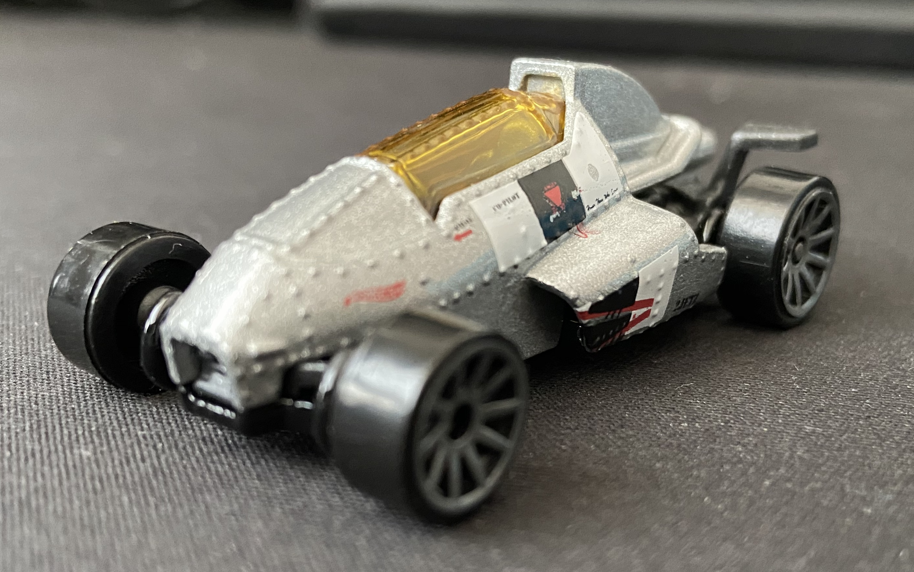
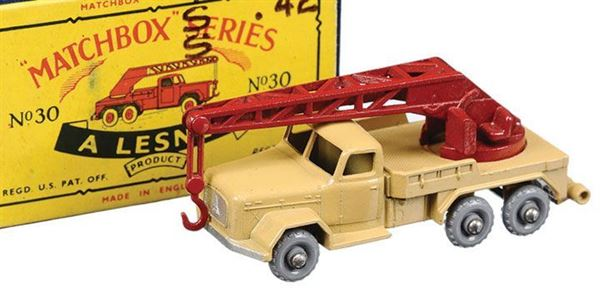
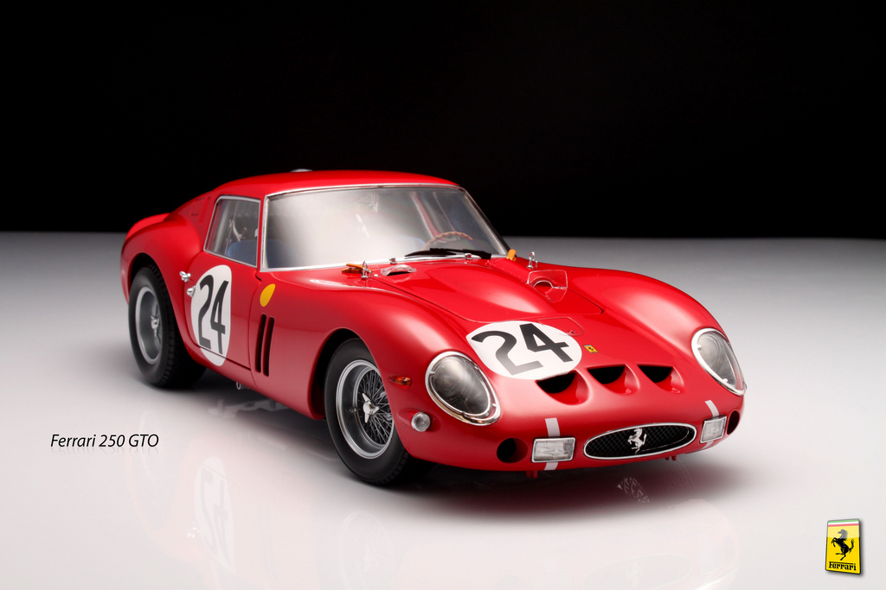
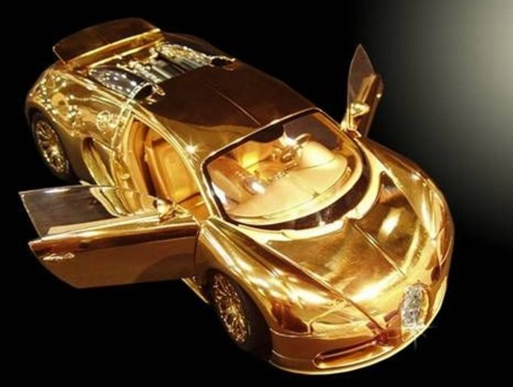
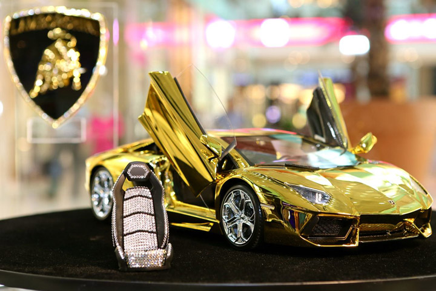

Blog
¿Por qué es tan satisfactorio el coleccionar autos a escala únicos?

Quienes piensen que esto del coleccionismo de autos a escala es algo infantil pueden darse cuenta de que detrás de esto hay más de lo que aparenta dicha actividad. Como buen ejemplo son las distintas convenciones de coleccionistas, donde se comercializan entre modelos particulares, históricos y escasos. También podemos encontrar autos considerados por algunas personas “exóticos” o “esclusivos”.
En esta industria nos podemos encontrar marcas muy reconocidas a nivel mundial, como lo son Hot Wheels, Majorette, MatchBox, M2Machines, entre otras. Cada auto tiene su apreciación por parte de cada uno de los fans, como no olvidar el primer carrito que se tuvo cuando era apenas un bebe, o incluso las veces que se pasaban la mayor parte en el suelo jugando con el carro e imaginando las carreras que se tenían. Para una persona simple solo es un juguete, para alguien que es coleccionista es un valor muy importante el tener exclusividad en ruedas.
Hot Wheels Legends
Esta compañía tan famosa de autos y juguetes cuenta con un diseño de campaña con varios asociados. Este evento tiene su porque, el cual es buscar algo único en un auto original que sobresalga del resto, lo que se quiere lograr es que la gente participe y muestre sus mejores ideas, que sea innovador y diferente al resto de la competencia o de los autos que ha sacado Hot Wheels.
El ganador participara en un concurso nacional donde competirá con otros vehículos que ganaron en otros estados y al primer lugar se le dará la oportunidad de que su auto se produzca a escala 1:64 y sea vendido por todo el mundo, dando crédito tanto a la persona como al vehículo.
Los autos a escala más caros de la historia.
Top 5
Los autos a escala más costos que existen.
5. Grúa Magirus Deutz (N.º 30) Matchbox 1967
Los coleccionistas de maquetas de coches únicamente pueden soñar con toparse algún día con una grúa Matchbox n.º 30 de 1967 en alguna venta de objetos usados en el vecindario. Si se tratara aún de los años 1980, el precio que hubieran pagado por ella hubiera sido de 10€. Actualmente una grúa n.º 30 marrón vale 13 000 €.
4. Ferrari 250 GTO
El ferrare 250 GTO puede que sea el mejor Ferrari del mundo. Este auto viene en diferetes modelos pero la empresa que fabrico lo vende por mas de 18 000 €. Sin duda cualquier amante del Ferrari deberia tenerlo a su colección.
3. Hot Wheels del 40.º aniversario
De estos ejemplares solamente se fabricó uno para el 40 aniversario de la empresa Hot Wheels en 2008. Un celebre joyero diseño este singular coche fabricado en oro blanco de 10 quilates, 1388 diamantes azules, 988 diamantes negros, 319 diamantes blancos y 8 rubís este auto está valorado en 140 000 €.

2. Bugatti Veyron
Si los moodelos anteriores los consideraste muy ordinarios para tu gusto, el siguiente de seguro te fascinara. Está fabricado en oro macizo de 24 quilates y platino, además de un diamante de 7,2 ct con corte sencillo, esta valorado en 250 000 €.
1. Lamborghini Aventador Oro
Este Lambo es a escala 1:8 y está fabricado con un increíble nivel de detalle. Lo que hace que sea incluso mejor es que el coche está recubierto de oro. El coche de verdad cuesta unos 400 000 € ¡así que es el coche en miniatura más caro del mundo!
Daniel Aarón Lara Duarte
Jefe & Fundador
Fundador de la empresa WheeleMan, adicto a los autos y por supuesto al coleccionismo de todo tipo de autos.
Salvador Loranca
Encargado del Marketing
Diseñador de marketing de la empresa Wheeleman, excelente diseñador.
Fernando Camarillo
Supervisor de Diseño
Encargado de llevar un buen control en la pagina Wheeleman, Amante del Futbol "El Guero".